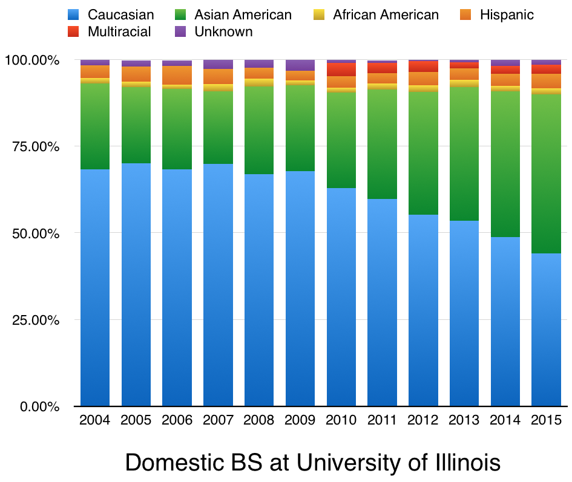
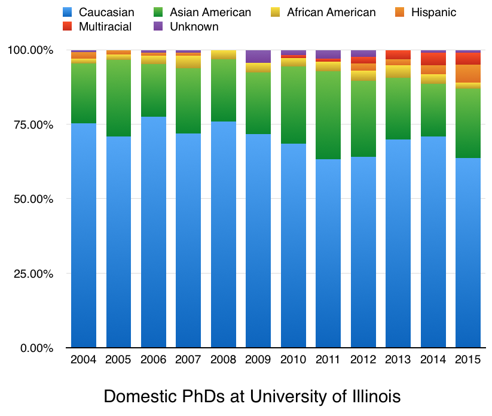
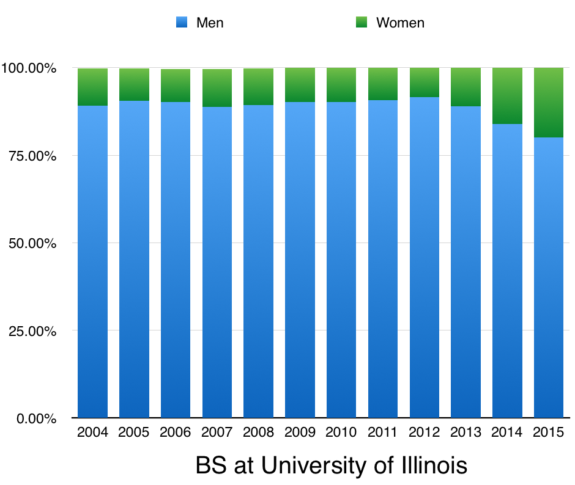
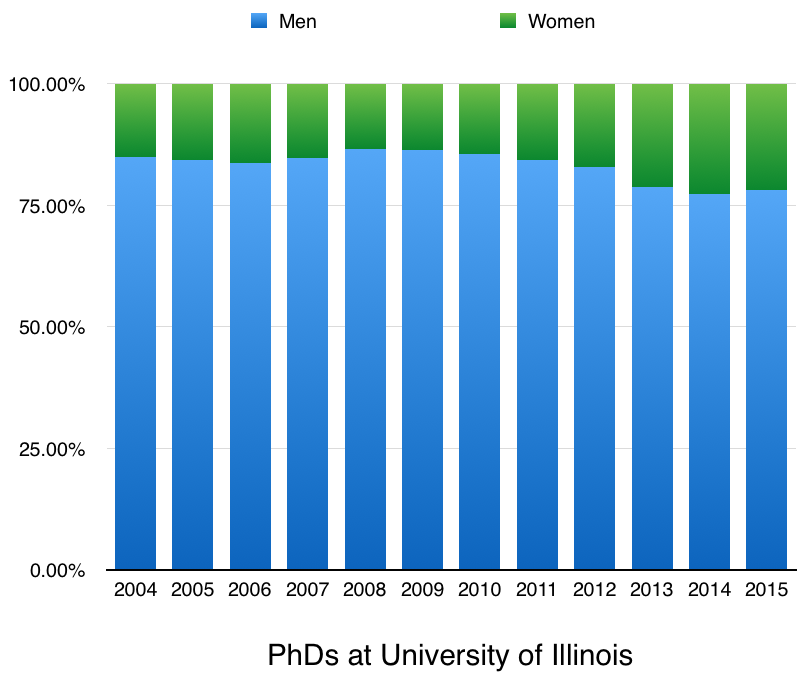

| Field | Reached Parity | 2014 %F |
| Psychology | 1984 | 72 |
| Biology | 2008 | 54 |
| Math | ... | 29 |
| Comp and Info Sciences | ... | 20 |
| Electrical Engineering | ... | 17 |
About |
Research |
Github |
CS Demographics |
| Lack of equal representation is a real problem in CS. I've been trying to keep tabs on the numbers as institutions/companies release them. The university graphs are for UIUC. If you know of numbers missing from this page, please let me know. | |
| Consider recommending a high-school girl you know to apply to NCWIT's Aspirations in Computing scholarship, or sign up to help review applications. Thanks | |
|
Demographics (% Tech Female):
|
Demographics (% Female Leadership):
|
| Hisp | Black | O/2+ | Hisp | Black | O/2+ | Hisp | Black | O/2+ | Hisp | Black | O/2+ | ||||
| Apple: | 7 | 6 | 3 | 8 | 7 | 3 | 8 | 8 | 3 | ||||||
| Dropbox: | 6 | 1 | 3 | ||||||||||||
| Pandora: | 4 | 3 | 5 | 4.3 | 3.3 | 5.9 | 7 | 3 | 4 | ||||||
| Twitter: | 3 | 1 | 4 | 3 | 1 | 3 | 4 | 2 | 3 | ||||||
| Microsoft: | 3.8 | 2.3 | 1.9 | 3.9 | 2.3 | 1.9 | 4 | 2.4 | 2.1 | ||||||
| Yahoo: | 3 | 1 | 3 | 3 | 1 | 4 | 2 | 1 | 4 | ||||||
| Google: | 2 | 1 | 3 | 2 | 1 | 3 | 3 | 1 | 3 | ||||||
| Facebook: | 3 | 1 | 2 | 3 | 1 | 2 | 3 | 1 | 2 | ||||||
| LinkedIn: | 3 | 1 | 1 | 3 | 1 | 1 | 3 | 1 | 3 | ||||||
| Pinterest: | 2 | 1 | 2 | 3 | 2 | 2 | |||||||||
| Uber: | 2.1 | 1 | 2.8 | ||||||||||||
Computer Science at UIUC | |
|  |  |
|  |  |
| Field | Reached Parity | 2014 %F |
| Psychology | 1984 | 72 |
| Biology | 2008 | 54 |
| Math | ... | 29 |
| Comp and Info Sciences | ... | 20 |
| Electrical Engineering | ... | 17 |

| US 2010 Demographics | ||||
| White | Asian | Hispanic | Black | Other/2+ |
| 64 | 5 | 16 | 12 | 3 |
| ** I am using categories that are present in the data, not making a comment on race/ethnicity/definitions-of-self/identity...** :) | ||||